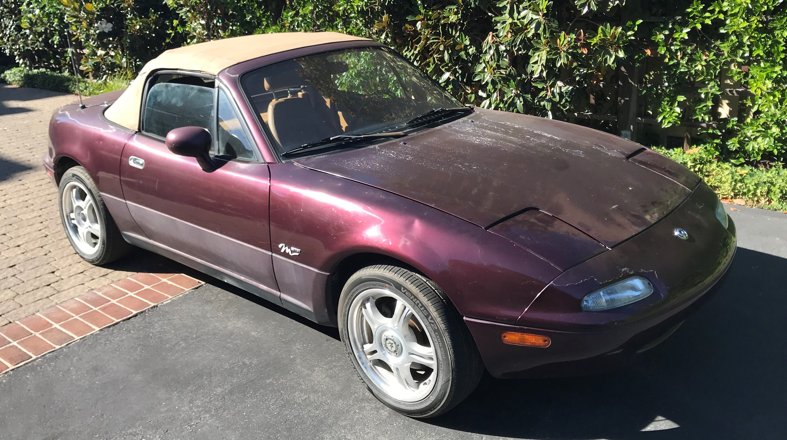

Autonomous Robot
Water Pump
Thermistor Cleaner



Personal Website
Miata Restoration
Planter Boxes
My name is Connor Young and I'm a rising senior at Cornell University in the College of Engineering. Check out the sections below to learn a little bit about me as a person and my aspirations for my career. Thanks for visiting!
When I'm not in the classroom or doing independent work, I stay pretty busy playing Sprint Football and club lacrosse for Cornell. In my free time, I like watching sports (especially hockey), playing video games, or doing something outdoors like skiing or fly fishing.
I'm majoring in Mechanical Engineering with a minor in Business. For now, I'm looking for an experience where I can combine my backgrounds in engineering and business to help a small, early-stage company develop and bring an innovative physical product to market. I like to analyze processes and physical systems and design and optimize them to best meet a set of goals. I also love to move quickly and work in active and hands-on environments. My passion lies in the automotive and aerospace industries, particularly electric and autonomous cars and space exploration.
Although I stay plenty busy with school projects, I also love delving into new fields and topics that interest me on my own time. Check some of my work from both categories below! Click on the project title or picture to learn more.
Autonomous Robot
Water Pump
Thermistor Cleaner
Personal Website
Miata Restoration
Planter Boxes
Since I'm often diving in to try to learn new skills and trying to maintain my old ones, some of them are stronger than others. I always feel it's important to give a more-than-binary description of your talents, so check out mine below!
-Led conception and development of blockchain supply-chain tracking program
-Built and deployed company ecommerce website with WordPress and WooCommerce
-Oversaw organization of manufacturing facility and process, including choosing, ordering, and installing thousands of dollars of ULine equipment
-12+ hours a week operating manufacturing line and tending to 3 acre farm
-Miscellaneous customer relations, fundraising work, and graphic design
-Determined important mechanical design and material choices for a major unannounced product
-Performed extensive CAD with Creo utilizing DFM techniques and COMSOL FEA analysis
-Selected and negotiated with vendors for material acquisition and evaluation
-Coordinated with a team of electrical and mechanical engineers to ensure optimal integration
Supervised Cub Scouts, ages 7-10, in day camp. Guided Scouts through crafts, team sports, archery, and other activities for enjoyment and merit badge advancement.
-Only high school intern for this commercial drone data analytics and mapping company
-Processed image data into 3D models, wrote instruction manuals, and assisted commercial pilot training
MATLAB, Creo Parametric, Python, AutoCAD, Fusion360, Microsoft Office, HTML5, CSS
ANSYS and COMSOL Sim Tools, Rapid Prototyping, DFM, Arduino, C, Bootstrap, Adobe CC (Illustrator, XD, Photoshop), WordPress, WooCommerce
Java, JavaScript, React, Git, Ruby
MATLAB, Thermodynamics, Statics, Dynamics, Mechanics of Materials, Mechanical Synthesis, Fluid Mechanics, Mechatronics, System Dynamics, Structural Mechanics, Heat Transfer
I am an extremely strong analytical thinker in everything I do. I love to logically break down problems and attempt to optimally solve them.
I am very organized in both my physical and virtual workspace and in my work process. I take great pride in carefully planning things out and executing them precisely.
I am a diligent and focused worker. I credit all my successes to my passion, drive, and work ethic far more than to any of my natural abilities.
I am not the fastest learner and do not possess a ton of skills. However, I love to learn and I learn well. It may take me longer than some to pick up a skill, but I learn it very thoroughly.
In all honesty, I had no interest in software development until sometime during my sophomore year of college. As such, I never put in time to develop outside programming skills like a lot of my peers. My perspective has since changed, and this is something I'm working on rectifying by currently teaching myself Web Development and Java.
Given my choice to pursue college athletics rather than research or a project team, I have limited practical experience on an engineering team. I hope that the leadership and teamwork intangibles that I've gained from playing sports along with my natural drive gives me a unique edge in this regard.
As much as everyone wants to be an artist, I must admit that I am a pretty stereotypical engineer, and don't have much of an eye for graphic or UI design. Knowing how important this is to great product functionality and experience, I'm working on improving my creative side through projects like this website or some of the basic graphic design pieces featured on the site.